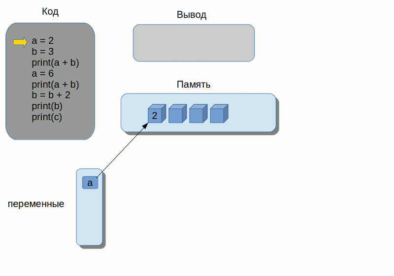

🐍Python variables, types, arrays, cycles
Posted
Python
Python, по-русски так же часто называют питоном, на самом деле назван в честь британской комик-группы Монти Пайтон.
Язык был впервые анонсирован в 1991 году голландским программистом Гвидо ван Россумом
и с тех пор развивается силами широкого сообщества программистов. Было выпущено большое количество версий этого языка.
В 2008 году вышла версия Python 3, в которую был внесен ряд изменений,
которые сделали этот язык несовместимым с предыдущими версиями. Это означает, что программы, написанные на
более ранних версиях языка оказалось невозможно запускать на новой версии языка - Python 3.
И с тех пор существуют параллельно 2 ветки языка: Python 2 и Python 3.
На курсах мы будем использовать 3 версию языка.
Что такое Python вообще?
Python - это интерпретатор, то есть специальная программа, которая интерпретирует или выполняет по шагам другие программы.
С другой стороны, Python, будучи языком программирования, определяет набор правил, согласно которым составляются программы.
И также определяет набор правил, согласно которым эти программы исполняются на компьютере.
🔥🔥🔥И так начнем🔥🔥🔥
Переменные и их типы - это просто
“Простое лучше, чем сложное” - одна из строчек Философии Python
Если первый раз слышишь что такое переменная 👉 переменная
Давай создадим несколько переменных:
digit_var = 5 # тип - int
float_num_var = 1.0003 # тип - float
str_var = 'Hello, user!' # тип - str
logic_var = True # тип - bool
Как видно из того что мы создали:
digit_varмы присвоили целое число5и Python автоматически присвоит типintдля этой переменнойfloat_num_varмы присвоили число с плавающей точкой1.0003и Python автоматически присвоит типfloatдля этой переменнойstr_varмы присвоили строку значит Python присвоит типstrдля этой переменнойlogic_varмы присвоилиTrueчто равно1значит Python присвоит типboolдля этой переменной
🤔🤔🤔Так так так, что это за типы то вообще???🤔🤔🤔
В Python есть некоторое количество базовых типов. Для начала нам понадобятся только некоторые из них:
int- целое числоfloat- число с плавающей точкойstr- строкаbool- логический тип, может быть толькоTrueилиFalselist- список, также назвают массивом - это набор элементов, любого типаtuple- кортеж, если просто - это защищеный от изменений списокdict- словарь - это упорядоченный массив с доступом по ключу
example_list = [10,20,30,'Hello', ['sublist', 1], True, 1.002] # тип list
example_tuple = ("One", 2) # тип tuple
example_dict = {'key': 1, 'next_key': 2} # тип dict
Магические операции
“Красивое лучше, чем уродливое” - еще одна из строчек Философии Python 😊
.∧＿∧
( ･ω･｡)つ━☆・*。
⊂ ノ ・゜+.
しーＪ °。+ *´¨)
.· ´¸.·*´¨) ¸.·*¨)
(¸.·´ (¸.·’* ☆вжух
1. Преобразование типов
Представим что у нас есть две переменных типа str:
first_str = '123'
second_str = "100"
Каждая переменная хранит строку в которой записано число.
Как нам сложить эти 2 числа, которые находятся внутри строк?
print ( first_str + second_str )
В консоль напечатается: 123100
Потому что find_str и second_str строковые,
а сложение строк приравнивается к их склеиванию, что мы и получили.
Примечание: получить тип переменной можно очень просто:
type(variable)- функцияtype()вернет строкой тип переменной
Преобразование типа - вот то что нам нужно ! 💪
Очень красивая и главное простая 🤗 конструкция используется в Python для того чтобы
преобразовать переменную одного типа в другой
Выглядит оно так: int(var) или str(var) или даже так list(dicted_var)
first_str = '123'
second_str = "100"
sum_firs_second = int(first_str) + int(second_str)
print(sum_firs_second)
Вот теперь мы получили искомое значение. Круто!
Примечаение: важно контроллировать что будет находится внутри скобок во время преобразования из одного типа в другой, иначе будет ошибка. Плохой пример:
int("123плохая строка")
😎Pro Zone Какой тип будет иметь переменная division?
left = 3
division = left / 2
2. Опеаторы присваивания
Оператор присваивания - это просто значок равенства.
Слева от оператора записывается имя переменной, а справа - значение, которое мы хотим связать с этой переменной.
Примечание: Имя переменной:
1. Может состоять из букв(строчных, прописных), цифр, подчеркивания_
2. Должно начинаться с буквы или подчеркивания
3. Не должно являться ключевым словом
4. Регистр букв имеет значение
variable = 2
Во время выполнения скрипта существует специальный список переменных. Когда мы объявляем новую переменную, она добавляется в этот список и связывается с некоторым значением (каким-либо объектом), хранящемся в памяти.

Очень простая анимация, которая показывает что надо
инициализировать *(присвоить значение переменной) переменную перед ее использованием
иначе все будет плохо🤔
3. Операторы прирощения
Для ускорения написания кода, а так же улучшения его вида, можно и нужно использовать операторы приращения
Рассмотрим простой пример чтобы понять что это такое
a = 2 # переменной присваивается значение 2
a += 3 # увеличиваем значение на 3
a = a + 3 # это строка делает тоже самое что и строка выше
Так же существуют аналогичные операторы:
a += 3 # оператор суммирования
a -= 3 # оператор вычитания
a *= 5 # оператор умножения
a /= 2 # оператор деления
a //= 5 # оператор целочисленного деления
a %= 2 # оператор взятия остатка от деления
a **= 2 # оператор возведения в степень
4. Арифметические операции
В начале был ноль!
a = 7
b = 2
print( a + b ) # сумма = 9 -> тип int() так как a и b типа int()
print ( a - b ) # разность = 5 -> тип int() так как a и b типа int()
print ( a * b ) # произведение = 14 -> тип int() так как a и b типа int()
print ( a / b ) # частное = 3.5 -> тип float() так как содержит плавающую запятую после деления
print ( a // b ) # целочисленное частное = 3 -> тип int() так как он целочисленный
print( a % b ) # остаток от деления = 1 -> тип int()
С первыми четырьмя операциями все понятно, а чтоже такое
целочисленное частное a // b и как оно считается? 😧
А происходит вот что: сначала берется частное от деления a на b, а потом отбрасываются числа после запятой.
Аналогично с тем если бы мы преобразовали переменную типа float() в тип int()
А вот с остатком от деления не так все однозначно 🙃
В данном случае ближайшее число к 7(переменная a),
которое делится на 2(переменная b) без остатка - это 6.
Поэтому остаток от деления равен 7 - 6 = 1
Массивы и Циклы без регистрации и смс
Для этой части нам подойдут еще пара строчек из философии Python:
“Читаемость имеет значение”
“Хотя он поначалу может быть и не очевиден, если вы не голландец” 😄
1. Нужно больше информации… о списках
Что такое список, словарь или кортеж мы уже знаем, но как ими пользоваться нет 😔
Давай разбираться🔥
1. Каждый список\словарь\кортеж имеет индексы каждого значения которое он содержит.
То есть это значит что мы можем получить любое значение из массива, зная его индекс или проще говоря адрес
array = ['a', 'b', 'Hello, user', 34]
Индексация начинается с 0, тоесть индекс первого элемента 'a' из массива array будет равен 0, дальше индекс 'b'
будет равен 1 и так до конца списка
Примечание: размер списка, журнала, строки или кортежа можно узнать с помощью функции
len(array)
Так как получить значение??!!😠
Все очень просто:
array = ['a', 'b', 'Hello, user', 34]
print(array[0]) # 'a'
print(array[3]) # 34
😎Pro Zone А что делать с журналом? Журнал можно получить как 2 списка назодящиеся параллельно:
sample_dict = {'key': 123, 'sec_key': "Hello!"}
keys = sample_dict.keys() # [ 'key', 'sec_key' ]
vals = sample_dict.values() # [ 123, "Hello!" ]
Значения из журнала можно получать как по ключу который содержится в keys()
print (sample_dict['sec_key']) # Hello!
Так же просто по индексу значения:
print (sample_dict.values()[0]) # 123
2. Строка тоже массив ващет 😏
И правда, к строке (типу str()) применим тот же подход что и к списку,
у строк так же есть индексы, можно получать символы по индексам.
Строку "Hello, $username"можно представить как массив символов:
["H", "e", "l", "l", "o", ",", " ", "$", "u", "s", "e", "r", "n", "a", "m", "e"]
3. На острие или чуток о красивых срезах
Срез - это конструкция позволяющая очень элегантно получить подмассив Представим у нас есть список:
array = [0, 1, 2, 3, 4, 5, 6, 7, 8, 9]
Но нам нужны только элементы от индекса 0 и до 4, также от 2 и до 7 включительно и от индекса 6 и до конца
С помощью срезов это делается одной строчкой!
one = array[ : 4 ] # [0,1,2,3]
two = array[ 2 : 7+1] # [2,3,4,5,6,7]
three = array[ 6 : ] # [6,7,8,9]
Логика проста. В место куда раньше вводил индекс пишешь промежуток ['индекс начала' : 'индекс конца']
Следует помнить, что возьмутся элементы от индекса начала и до индекс конца не включая элемент под индексом индекс конца,
По этой причине мы и добавили в промежуток от 2 до 7 +1 в конец
Примечание, если
индекс началаилииндекс концасовпадает с началом или концом списка, то их можно не писать
2. Жизнь - цикл, а люди в нем переменные
На пути программиста🤖 к сложной программе и мимнимальным количеством написанных строк стояло бы еще больше преград, если бы циклы не существовали
Представим, что нам надо выполнить print('Hello') n-ое количество раз. Да, если n например будет равнятся трем
или даже десяти, это не составит большого труда. Ну а если n будет равна тысяче или миллиону?😬
В этом случае уже даже Ctrl+C -> Ctrl+V устанешь делать.
Тут нам и пригодятся циклы!
Для начала рассмотрим цикл for и функцию range()
range() поможет нам сгенерировать ряд чисел в рамках заданного диапазона
#1. range(стоп)
for i in range(5):
print(i)
# 0
# 1
# 2
# 3
# 4
#2. range(старт, стоп)
for index in range(4,10):
print(index)
# 4
# 5
# 6
# 7
# 8
# 9
#3. range(старт, стоп, шаг)
for n in range(3, 16, 3):
print(n)
# 3
# 6
# 9
# 12
# 15
Есть 3 варианта создания диапозона для генерации с помощью range():
тут действует логика как в срезах
- Указать только одно знаячение, тогда генерация начнется с
0и будет продолжаться до заданного значения - Указать два значения -
стартистоп, тогда сгенерируются числа в заданном диапозоне - Дополнительно указать шаг - третье значение, тогда генерация начнется от
старти достоп, а на каждой итерации будет делаться шаг равный переданному значению
А как работает for?
Для начала давай поймем как этим пользоваться:
for переменная in список:
действие
Имя переменной может быть абсолютно любым, но надо помнить что лучше использовать уникальное,
список в нашем случае это range() просто набор неких элементов - *в дальшейшем разберем почему это тихая ложь*.
Ну а действие в нашем случае это print('Hello!').
Переменная здесь нужна потому что это универсальная конструкция:
- Можно напечатать например все элементы списка
- Её можно использовать как индекс итерации в нашем случае, так как мы делаем что то
nраз и шаг всего единица
и так даее, вариантов множество
На каждой итерации переменной присваивается следующее значение из списка, пока список не закончится
И что нам это даёт???
Это решает нашу проблему тремя - четырьмя строчками:
n = 100000
for count in range(n):
print("Hello")
# 100000 раз напечатается 'Hello!'
Так же можно использовать вместо range() любой массив, в том числе и строку:
array = ['a', 'b', 'Hello, user', 34]
for item in array:
print(item)
for symbol in array[2]:
print(symbol)
Цикл while
Это будет проще 😪
Все мы помним логический тип bool(), так вот цикл while - это цикл с условием.
А результат проверки условия возвращает тип bool()
while условие:
действие
while будет выполять действие до тех пор пока условие будет положительным, что значит что оно равно True
i = 0
while i < 6:
print (i)
i += 1
# 0
# 1
# 2
# 3
# 4
# 5
В этом примере while будет выполняться пока i меньше 6